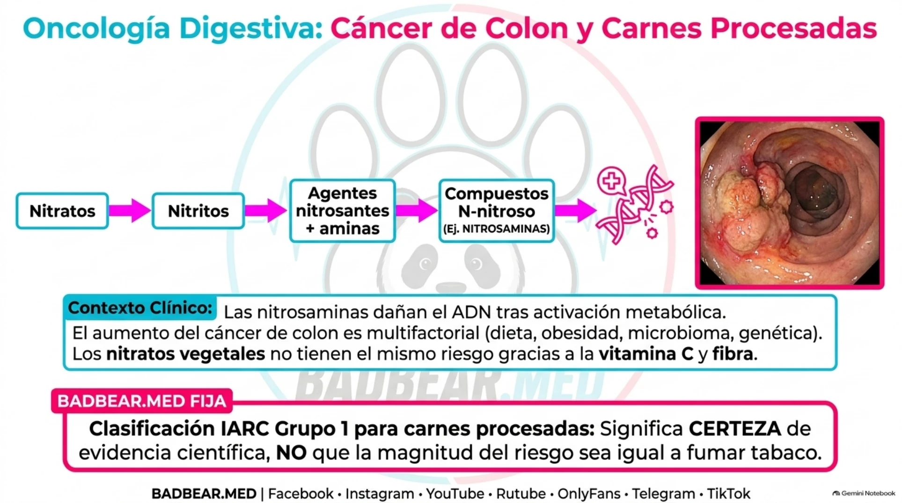
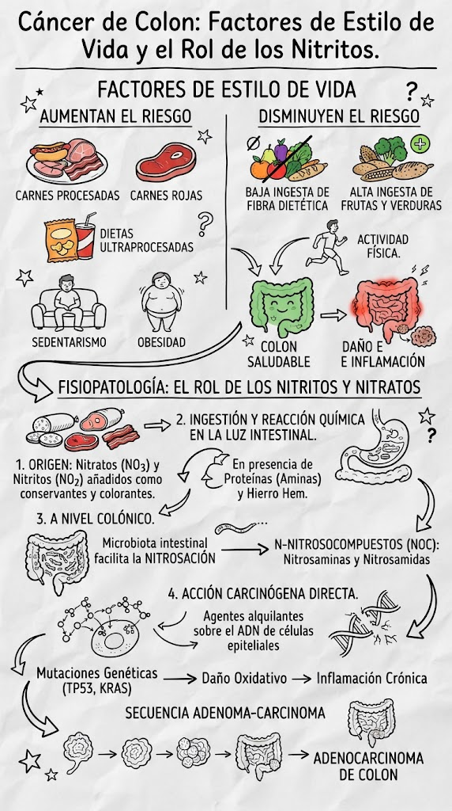

¿Por qué está aumentando el cáncer colorrectal, especialmente en jóvenes?
Incidencia, predisposición, hábitos, microbiota y detección oportuna.
La explicación no es una sola comida, una sola bacteria ni una mutación común a todos. El cáncer colorrectal surge por acumulación de alteraciones biológicas sobre una base de susceptibilidad y exposiciones. En varios países se ha observado aumento del cáncer diagnosticado antes de los 50 años, llamado cáncer colorrectal de inicio temprano. Eso no implica que aumente igual en todo país, grupo de edad o segmento del colon. [1–5]
1. Qué significa realmente «ha aumentado»
El número absoluto de casos puede aumentar porque crece o envejece la población. La incidencia compara casos nuevos con población y tiempo; las tasas ajustadas por edad ayudan a separar el efecto demográfico. Una proporción mayor de casos jóvenes tampoco prueba por sí sola que su tasa haya aumentado: podría cambiar el denominador de casos mayores.
La tendencia de inicio temprano se ha documentado en múltiples entornos, pero es heterogénea. Para afirmar cuánto ha aumentado en Perú o en un hospital se necesita un registro adecuado, fechas, denominador y método. No se extrapola un porcentaje de otro país ni un gráfico esquemático como si fuera una estadística local. La mayoría de casos sigue ocurriendo en edades mayores, aunque ser joven no excluye el diagnóstico. [1,2]
2. De mucosa normal a tumor: vías distintas
En la vía convencional, alteraciones de control de crecimiento pueden favorecer un adenoma y después un carcinoma. APC, KRAS y TP53 son genes importantes en modelos de progresión, pero no todos los tumores presentan la misma secuencia ni todos los adenomas se malignizan. La progresión depende de múltiples eventos y puede tomar años.
La vía serrada implica lesiones con arquitectura serrada y alteraciones moleculares específicas, con participación frecuente de BRAF y cambios de metilación en ciertos subgrupos. La deficiencia de reparación de errores del ADN puede generar inestabilidad de microsatélites y otra ruta de carcinogénesis. Diferenciar estas vías ayuda a comprender por qué la apariencia, localización y respuesta terapéutica varían. [3]
3. Herencia: importante, pero no toda la explicación
El síndrome de Lynch se relaciona con variantes hereditarias en reparación del ADN y aumenta riesgo de varios tumores. La poliposis adenomatosa familiar, vinculada a APC, produce predisposición marcada; existen otros síndromes de poliposis y susceptibilidad. Ante diagnóstico joven, antecedentes familiares o múltiples tumores se valora asesoramiento y estudio genético.
Muchos pacientes jóvenes no tienen un síndrome hereditario identificable. La ausencia de antecedentes no excluye riesgo, porque las familias pueden ser pequeñas, tener información incompleta o presentar variantes no reconocidas. A la inversa, un tumor dMMR no equivale automáticamente a Lynch: puede ser esporádico. La genética explica una parte de los casos, pero no toda la tendencia poblacional. [3]
4. Factores modificables y mecanismos plausibles
| Factor | Qué se conoce | Cómo explicarlo sin exagerar |
|---|---|---|
| Obesidad y exceso de adiposidad | Se asocian con mayor riesgo de cáncer de colon | Inflamación crónica, señales metabólicas e insulinorresistencia pueden participar; no todo paciente tiene obesidad. |
| Inactividad física | Se relaciona con riesgo; actividad habitual favorece prevención | No se reduce a que «las heces se quedan pegadas»: participan mecanismos metabólicos y conductuales. |
| Carnes procesadas | La evaluación IARC considera evidencia causal para cáncer colorrectal | El riesgo depende de exposición; clasificación carcinogénica no significa igual magnitud de riesgo que otros agentes. |
| Patrón dietético pobre en fibra | Puede acompañar mayor riesgo y patrones poco saludables | Importa el patrón completo, no atribuir protección absoluta a un alimento. |
| Alcohol y tabaco | Factores de riesgo reconocidos | Reducir exposición disminuye riesgos; no permiten identificar la causa única de un caso individual. |
| Inflamación intestinal crónica | Crohn colónico y colitis ulcerosa pueden aumentar riesgo según duración y extensión | Exigen control de inflamación y vigilancia específica; no equivalen a colon irritable. |
Las recomendaciones de prevención apoyan actividad física, peso saludable, dieta con fibra y menor consumo de carnes procesadas, reducción de alcohol y evitar tabaco. Son medidas de reducción de riesgo, no garantías ni un motivo para culpabilizar a quien desarrolla cáncer. [1,6]
Nitritos, nitratos y carcinogénesis colorrectal: del alimento al ADN
El producto que se suele mencionar en clase son las nitrosaminas, dentro del grupo más amplio de compuestos N-nitroso (NOC). No se trata de que un nitrato llegue al colon y se transforme inevitablemente en cáncer: intervienen reacciones químicas, condiciones del medio, exposición celular, reparación del ADN y acumulación de alteraciones durante años. [9–12]
Qué productos contienen nitritos y nitratos
| Fuente | Ejemplos | Interpretación |
|---|---|---|
| Carnes curadas y ciertos embutidos | Jamón curado, tocino, hot dogs, salchichas, salami, mortadela y algunos chorizos. | Pueden contener nitritos o nitratos añadidos; revisar formulación y etiqueta. No todo producto contiene el mismo conservante. |
| Vegetales | Espinaca, rúcula, lechuga, acelga, remolacha y apio. | Aportan principalmente nitratos naturales en una matriz con fibra, vitamina C y polifenoles. |
| Agua contaminada | Agua afectada por fertilizantes, residuos ganaderos o aguas residuales. | Puede aportar nitratos; no implica que toda agua potable tenga concentraciones peligrosas. |
Nitrato es NO₃⁻ y nitrito NO₂⁻. En etiquetas pueden figurar E249 (nitrito de potasio), E250 (nitrito de sodio), E251 (nitrato de sodio) y E252 (nitrato de potasio). En productos cárnicos contribuyen a conservación, color y sabor y al control de microorganismos como Clostridium botulinum. El riesgo se evalúa considerando el alimento completo, no únicamente el nombre del aditivo. [9]

Cómo leer la lámina sin saltar la fisiopatología
Primero separar exposición, formación química, daño molecular y progresión tumoral. No son la misma etapa. El nitrato puede reducirse en la boca, el medio gástrico favorece reacciones y el colon permite formación adicional según microbiota y sustratos. El recuadro “compuestos N-nitroso” reúne moléculas distintas: algunas requieren activación y otras generan agentes de acción más directa.
Una base modificada del ADN no equivale todavía a un tumor: puede repararse o la célula puede eliminarse. Si el error se fija y ocurre en una población celular que persiste, puede contribuir a expansión clonal; hacen falta otros cambios para progresar a carcinoma. Una lesión endoscópica se evalúa con histología, extensión y estadificación, no se atribuye a una comida específica por su apariencia.
Respuesta oral: “El mecanismo químico explica una contribución al riesgo, pero el diagnóstico de cáncer y la indicación de cirugía exigen demostrar la lesión y definir su extensión. No existe una prueba clínica que certifique que un tumor individual fue causado exclusivamente por nitritos”.

Primera etapa: la transformación empieza en la boca
Parte del nitrato ingerido se absorbe y retorna a la saliva. Bacterias orales lo reducen a nitrito, que vuelve a deglutirse. Esta circulación enterosalival explica por qué no es correcto ubicar el inicio de todas las transformaciones exclusivamente en el colon. El cuerpo también produce derivados nitrogenados a partir del metabolismo del óxido nítrico. [10]
Segunda etapa: nitrosación en el aparato digestivo
En medio ácido, el nitrito puede formar ácido nitroso y especies nitrosantes. Estas reaccionan con precursores adecuados, como ciertas aminas y amidas, para generar compuestos N-nitroso. La nitrosación de determinadas aminas forma nitrosaminas; la de determinadas amidas puede formar nitrosamidas. No todo nitrito participa en esa vía: compite con otras reacciones, incluida formación de óxido nítrico.
Algunos NOC ya pueden estar presentes en alimentos procesados y otros se generan endógenamente. La fuente alimentaria, antioxidantes, cantidad de precursores y condiciones digestivas modifican el proceso. No toda molécula N-nitroso tiene la misma actividad biológica. [9,10]
Tercera etapa: qué ocurre específicamente en el colon
El contenido colónico incluye restos dietéticos, péptidos, productos de digestión, compuestos nitrogenados y derivados de ácidos biliares. La microbiota transforma parte de ese material; las condiciones luminales pueden favorecer nitrosación adicional. La carne roja aporta hierro hemo, que puede favorecer formación de NOC. En estudios controlados de alimentación, aumentar carne roja elevó compuestos N-nitroso detectados en heces, apoyando una contribución de la formación endógena. [11]
La presencia fecal es evidencia de exposición y metabolismo, no una prueba de que cada consumidor desarrollará cáncer. Tampoco permite atribuir todos los tumores jóvenes a embutidos o nitratos.
Cuarta etapa: activación y aductos del ADN
Algunas nitrosaminas requieren activación metabólica; otros compuestos pueden generar agentes reactivos de acción más directa. Esas especies pueden unirse covalentemente a bases del ADN: forman aductos. Dos lesiones estudiadas son O⁶-metilguanina y O⁶-carboximetilguanina. La modificación química puede alterar el reconocimiento de la base durante replicación.
Un estudio de alimentación controlada encontró más células colónicas exfoliadas con O⁶-carboximetilguanina después de una dieta alta en carne roja. Esto aporta evidencia mecanística de daño molecular asociado a exposición; el estudio no demuestra que sus participantes desarrollaron cáncer. [12]
Quinta etapa: reparación, mutación y expansión celular
La célula puede reparar el daño, detener su ciclo o morir. Si la lesión persiste y el ADN se replica de forma incorrecta, puede fijarse una mutación. El organismo no convierte automáticamente todo aducto en tumor. Para una lesión duradera importan células que puedan mantenerse y expandirse en las criptas, además de nuevos eventos que favorezcan supervivencia y proliferación.
La carcinogénesis colorrectal tiene varias rutas. En la vía convencional son relevantes alteraciones de APC/Wnt, activación de KRAS y cambios posteriores en supresores como TP53, entre otros. Esa secuencia es un modelo general, no una firma exclusiva y obligatoria de nitritos. Un adenoma puede desarrollar displasia y progresar; no todos lo hacen. Para Cirugía, el carcinoma con invasión submucosa adquiere acceso a estructuras linfovasculares y exige una valoración distinta de una lesión confinada a la mucosa. [3]
Mecanismos que cooperan y diferencias con vegetales
El hierro hemo también puede favorecer peroxidación lipídica y productos reactivos. El procesamiento y la cocción intensa generan otros compuestos, como hidrocarburos aromáticos policíclicos y aminas heterocíclicas. La evidencia sobre carne procesada no se reduce a un solo conservante. [9]
Los vegetales aportan nitratos junto con vitamina C, polifenoles y fibra. Determinados componentes inhiben nitrosación y el contexto alimentario difiere del de una carne curada. Por eso una verdura con nitratos no equivale a un embutido ni justifica evitar vegetales.
Cómo interpretar el riesgo y explicarlo en la rotación
IARC clasifica carne procesada como carcinógena para humanos (grupo 1), con evidencia suficiente para cáncer colorrectal. Nitratos o nitritos ingeridos bajo condiciones que producen nitrosación endógena se clasifican como probablemente carcinógenos (grupo 2A). La categoría expresa certeza de evidencia, no que la magnitud de riesgo sea idéntica a la del tabaco. No significa que una porción produzca inevitablemente cáncer. [6,10]
Respuesta oral: «Las carnes procesadas pueden aportar nitritos y favorecer compuestos N-nitroso. La transformación empieza antes del colon y puede continuar en él, donde la microbiota y el hierro hemo influyen en nitrosación. Algunos productos generan aductos del ADN; si no se reparan y se fijan mutaciones, pueden contribuir a la progresión tumoral. Es un mecanismo de riesgo dentro de una enfermedad multifactorial, no la explicación única del incremento actual».
5. Microbiota y colibactina: qué aportan los estudios recientes
La microbiota incluye microorganismos que interactúan con mucosa, metabolismo e inmunidad. Ciertas cepas bacterianas producen sustancias genotóxicas. Colibactina, producida por determinadas bacterias portadoras del conjunto de genes pks, puede generar daño del ADN y una firma mutacional característica.
Experimentos en organoides mostraron una firma mutacional tras exposición a E. coli genotóxica. Un estudio internacional publicado en Nature en 2025 analizó 981 cánceres y relacionó firmas compatibles con colibactina con características geográficas y menor edad al diagnóstico. Estos resultados apoyan investigar exposiciones tempranas y mecanismos microbianos, pero no prueban que una bacteria explique todos los casos jóvenes. [4,5]
Una firma en el tumor registra un proceso de daño previo; no significa necesariamente que una muestra fecal actual identifique la exposición que inició el tumor. Tampoco establece un programa validado de antibióticos, probióticos o análisis de microbiota para prevenir cáncer. Intervenir sin evidencia puede generar efectos adversos y alterar el ecosistema intestinal.
6. Antibióticos y exposiciones tempranas: asociación no es causalidad suficiente
Algunos estudios observacionales exploran asociaciones con antibióticos, dieta temprana y cambios de microbiota. Pueden existir confusores: las infecciones que motivaron el antibiótico, comorbilidad, contacto sanitario y otros hábitos. Una asociación no demuestra que un tratamiento necesario haya causado el tumor años después.
Se plantea un efecto de cohorte: personas nacidas en generaciones distintas pudieron acumular exposiciones diferentes desde infancia o adolescencia. Este enfoque intenta explicar por qué el aumento aparece en grupos sucesivos, pero todavía no permite cuantificar una causa única para cada individuo. El material original incluye una gráfica conceptual; aquí no se utiliza como curva epidemiológica porque no aporta datos verificables de una población.
7. Detección y retraso diagnóstico: dos efectos diferentes
Mayor acceso a colonoscopia o cambios de tamizaje pueden aumentar la detección de lesiones que antes no se identificaban. Esto influye en las cifras, pero no explica necesariamente toda la tendencia de inicio temprano. Para distinguirlo se estudian edades, estadios, tasas y cambios de práctica a lo largo del tiempo.
El retraso diagnóstico ocurre cuando síntomas se atribuyen durante meses a hemorroides, dieta o problemas funcionales sin reevaluación. Puede empeorar estadio al diagnóstico y resultados; no equivale por sí solo a haber generado más tumores biológicamente. Aumento de incidencia y diagnóstico tardío son problemas relacionados, pero diferentes.
8. Síntomas que merecen investigación a cualquier edad
Sangre persistente en heces, anemia ferropénica no explicada, pérdida de peso involuntaria y cambios sostenidos del hábito intestinal requieren evaluación. La combinación y evolución importan. Un FIT negativo en una persona sintomática no resuelve automáticamente una sospecha clínica relevante; el algoritmo diagnóstico depende del contexto.
Dolor intenso, distensión progresiva, vómitos y ausencia de tránsito pueden señalar obstrucción. Dolor con peritonitis o deterioro puede indicar perforación u otra urgencia. Ser joven no justifica omitir estudio cuando los datos son preocupantes.
9. Prevención y tamizaje: separar asintomáticos de sintomáticos
Tamizaje se dirige a personas sin síntomas. En Estados Unidos, USPSTF recomienda ofrecerlo desde 45 años en riesgo promedio, con opciones como FIT o colonoscopia según estrategia. La edad y modalidad se ajustan a guías nacionales, recursos y riesgo; esta recomendación no se presenta como una norma universal peruana. [7]
Ante antecedentes familiares, síndrome hereditario o enfermedad inflamatoria intestinal, la vigilancia puede empezar antes y utilizar intervalos distintos. Ante síntomas, no se espera llegar a la edad de tamizaje: se realiza evaluación diagnóstica. Extirpar lesiones precursoras apropiadas permite prevenir parte de los cánceres, y completar la colonoscopia después de un test fecal positivo es esencial para que el programa funcione.
No se recomienda automedicarse con aspirina, antibióticos ni suplementos para prevenir cáncer por cuenta propia. El balance de beneficios y riesgos cambia según antecedentes y, en situaciones hereditarias específicas, debe discutirse con el equipo tratante.
10. Una respuesta elaborada para la exposición
«El aumento del cáncer colorrectal de inicio temprano probablemente es multifactorial. Hay contribución de predisposición, factores metabólicos y hábitos, exposiciones acumuladas desde edades tempranas y posibles mecanismos de microbiota. Estudios recientes sobre colibactina aportan una pista biológica importante, pero no una explicación única ni una intervención preventiva ya validada. Debemos distinguir incidencia real, mayor detección y retraso diagnóstico, y no ignorar síntomas por la edad del paciente».
Esta respuesta reconoce lo que se sabe y lo que continúa investigándose. La precisión no resta fuerza a la exposición: evita convertir una hipótesis atractiva en una afirmación clínica falsa.
Repaso final · BADBEAR.MED FIJA:
- Carnes procesadas, nitrosación y aductos del ADN contribuyen al riesgo; nitratos vegetales no equivalen al mismo contexto.
- Inicio temprano significa diagnóstico antes de 50 años; no que la mayoría de cánceres sean jóvenes.
- Número absoluto, proporción e incidencia ajustada no son la misma medida.
- Herencia explica algunos casos; la tendencia también requiere estudiar exposiciones y cohortes.
- Colibactina tiene evidencia mecanística y firmas tumorales, pero no explica todos los casos ni justifica prevención antibiótica.
- Sangrado, anemia y cambios persistentes del tránsito se investigan aunque el paciente sea joven.
- Tamizaje es para asintomáticos; síntomas requieren diagnóstico sin esperar una edad límite.
Bibliografía y lecturas
- World Health Organization. Colorectal cancer. Ficha actualizada 13 febrero 2026. OMS.
- IARC. Increase of early-onset colorectal cancer: a cohort effect. Análisis institucional.
- National Cancer Institute. Genetics of Colorectal Cancer, PDQ. Genética y vías.
- Díaz-Gay M, et al. Geographic and age variations in mutational processes in colorectal cancer. Nature. 2025;643:230–240. DOI 10.1038/s41586-025-09025-8.
- Pleguezuelos-Manzano C, et al. Mutational signature in colorectal cancer caused by genotoxic pks+ E. coli. Nature. 2020;580:269–273. DOI 10.1038/s41586-020-2080-8.
- WHO/IARC. Carcinogenicity of the consumption of red meat and processed meat. Evaluación y explicación de riesgo.
- USPSTF. Colorectal Cancer: Screening, 2021. Recomendación.
- Material aportado a BADBEAR.MED, páginas 12–15. PDF aportado.
- IARC. Red Meat and Processed Meat: Mechanistic data. [9]
- IARC. Ingested Nitrate and Nitrite: Mechanistic data. [10]
- Effect of white versus red meat on endogenous N-nitrosation in the human colon. [11]
- Lewin et al. Red meat enhances colonic O⁶-carboxymethylguanine, 2006. [12]
Material de estudio elaborado para la rotación. La atención clínica requiere valoración individual y protocolos del equipo tratante. Las imágenes del material aportado se utilizan como apoyo docente; no sustituyen un estudio clínico completo.